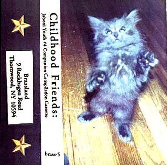
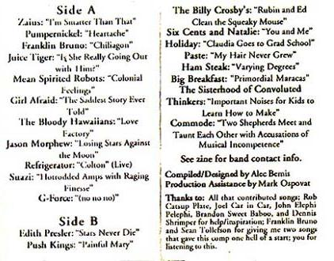

childhood friends
 
title: childhood friends
company: brass
format: cassette
side 1:
zaius - i'm smarter than that
pumpernickel - heartache
franklin bruno - chiliagon
juice tiger - is she really going out with him?
mean spirited robots - colonial feelings
girl afraid - the saddest story ever told
the bloody hawaiians - love factory
jason morphew - losing stars against the moon
refrigerator - colton (live)
suazi - hotrodded amps with ragin finesse
g-force - (no no no)
side 2:
edith presler - stars never die
push kings - painful mary
the billy crosby's - rubin and ed clean the squeaky mouse
six cents and natalie - you and me
holiday - claudia goes to grad school
paste - my hair never grew
ham steak - varying degrees
big breakfast - primordial maracas
the sisterhood of convoluted thinkers - important noises for kids to
learn how to make
commode - two shepherds meet and taunt each other with accusations of
musical incompetence
please mail any questions/comments/complaints, or just notes hello to:nall@themountaingoats.net